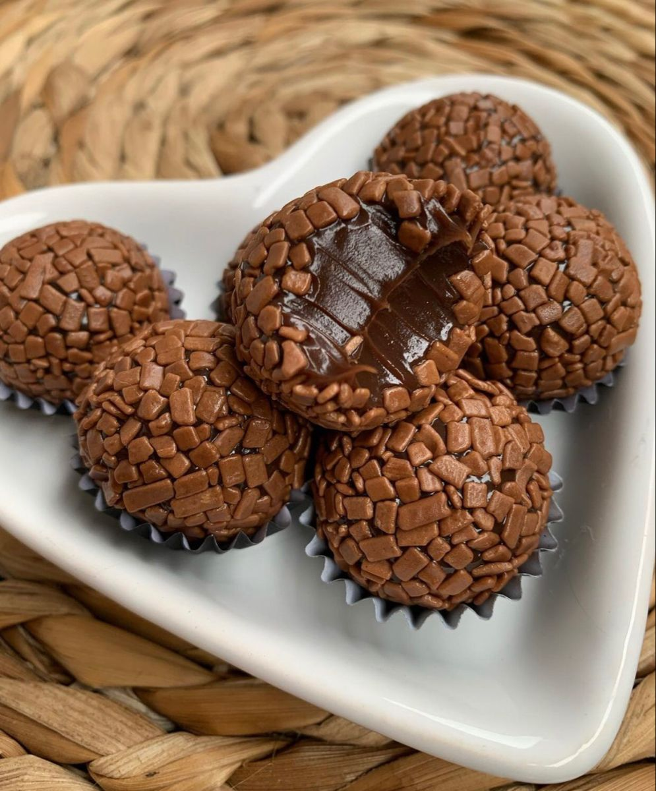

🍫 Brigadeiro

Um doce clássico, fácil de preparar e perfeito para qualquer momento.
Ver ingredientes e modo de fazer
Ingredientes
- 1 lata de leite condensado
- 2 colheres de chocolate em pó
- 1 colher de manteiga
- Granulado de chocolate
Modo de fazer
- Coloque o leite condensado em uma panela.
- Acrescente o chocolate em pó e a manteiga.
- Misture bem os ingredientes.
- Leve ao fogo baixo, mexendo sempre.
- Cozinhe até a mistura começar a desgrudar do fundo da panela.
- Deixe esfriar.
- Faça pequenas bolinhas e passe no granulado.